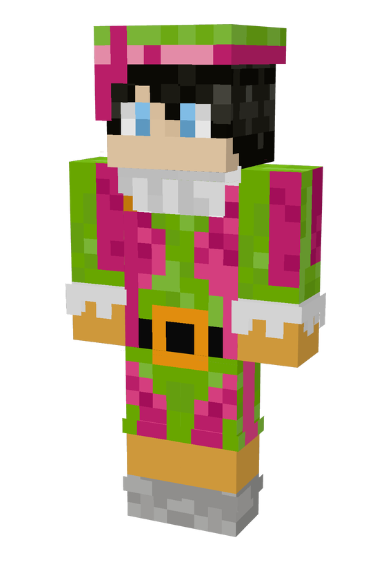

Minecraft Piet skin maken
Kies de kleuren van je Piet voor Sinterklaas, draai hem rond en download de skin voor Minecraft.

Zo zet je hem in Minecraft
Java Edition
- Download de skin hierboven (pietje.png).
- Open de Minecraft Launcher, ga naar Skins en kies Nieuwe skin.
- Kies het model Klassiek (de armen van Pietje zijn 4 pixels breed, zoals bij Steve) en selecteer pietje.png.
Bedrock Edition
- Ga naar de Kleedkamer en open de klassieke skins.
- Kies onder Eigen de lege skin, dan Kies nieuwe skin, en selecteer pietje.png.
- Kies het klassieke model met de brede armen, zoals bij Steve.
Kan ik mijn Piet delen?
Ja: de kleuren staan in de link. Met Link kopiëren kan iemand anders precies jouw Piet openen.
Werkt het op mijn telefoon?
Ja, alles gebeurt in je browser. Er wordt niets geüpload.
Kan ik mijn eigen hoofd gebruiken?
Ja: kies Eigen hoofd, of sleep je Minecraft-skin op het voorbeeld. Pietje krijgt dan jouw gezicht en haar, met de Pietenmuts erop. Je skin blijft op je eigen apparaat, en staat dus ook niet in de link.